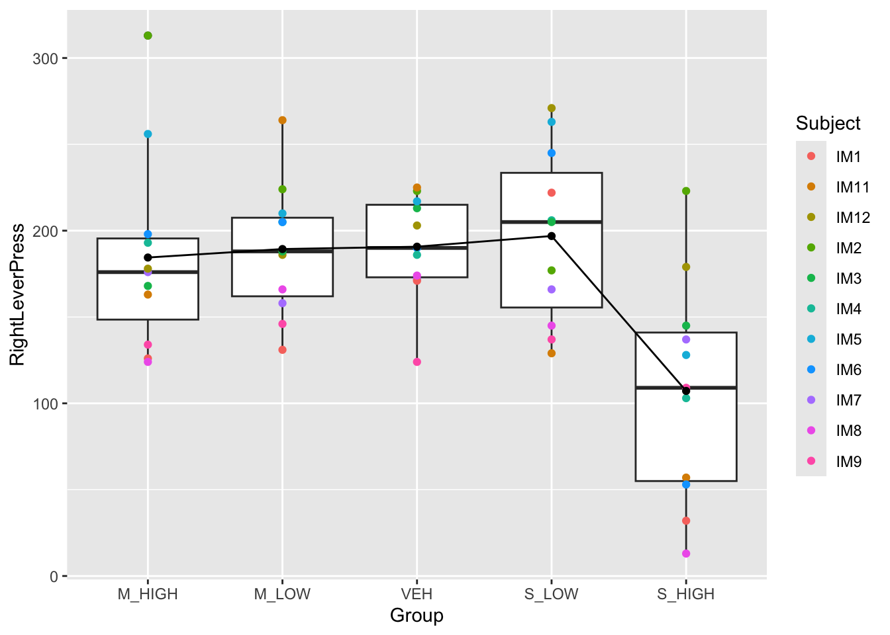
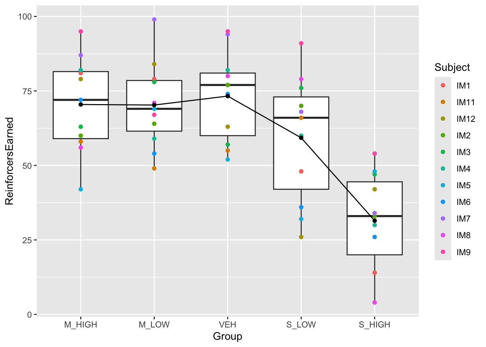
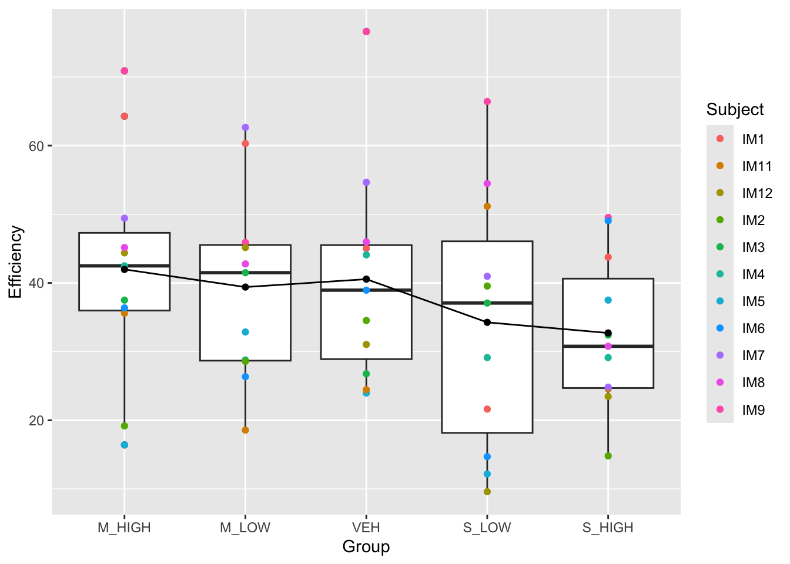
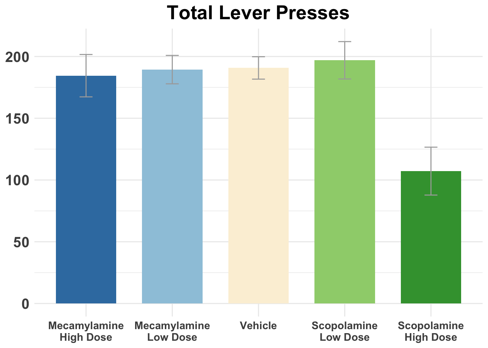
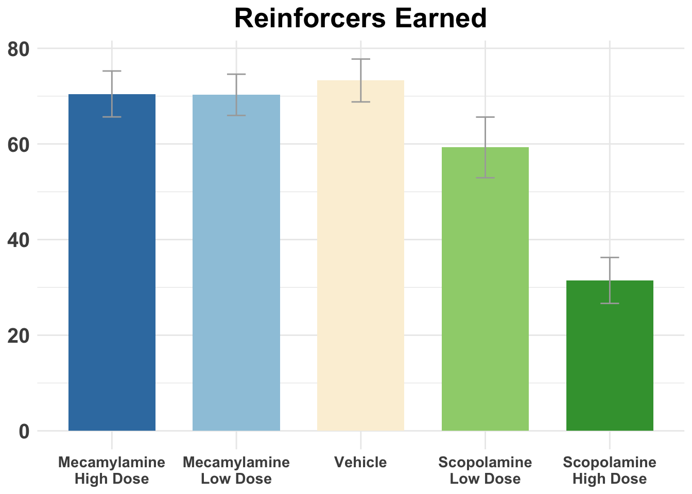
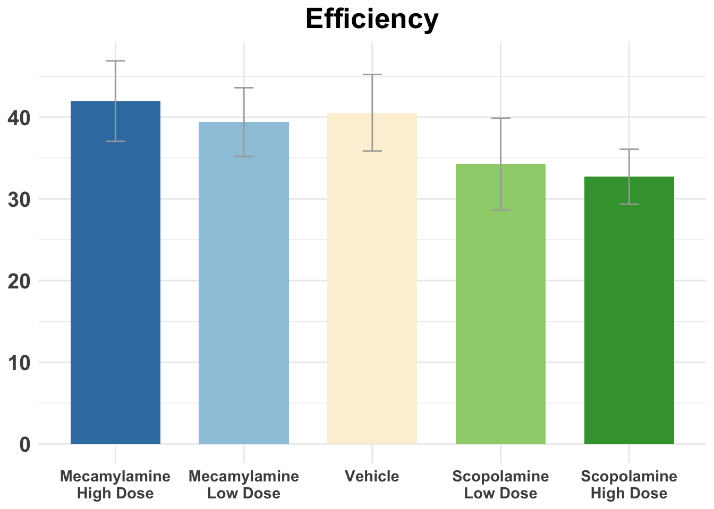
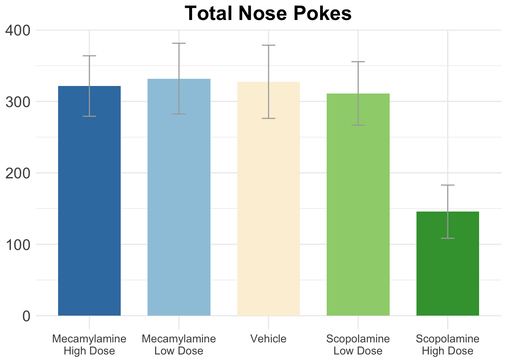

This project aims to analyze the main DVs of my first year project, which looks at the effect of acetylcholine antagonists in the nucleus accumbens on rats’ impulsive action, measured by the DRL-20 paradigm (restrain lever press for 20 seconds to get a sugar pallet). The 3 main DVs we’re looking at is reinforcerns earned, lever presses, and efficiency (reinforcers earned/total level presses)
library(readxl)
library(tidyverse)## ── Attaching core tidyverse packages ──────────────────────── tidyverse 2.0.0 ──
## ✔ dplyr 1.1.4 ✔ readr 2.1.4
## ✔ forcats 1.0.0 ✔ stringr 1.5.1
## ✔ ggplot2 3.5.1 ✔ tibble 3.2.1
## ✔ lubridate 1.9.3 ✔ tidyr 1.3.0
## ✔ purrr 1.0.2
## ── Conflicts ────────────────────────────────────────── tidyverse_conflicts() ──
## ✖ dplyr::filter() masks stats::filter()
## ✖ dplyr::lag() masks stats::lag()
## ℹ Use the conflicted package (<http://conflicted.r-lib.org/>) to force all conflicts to become errorslibrary(haven)
library(lme4)## Loading required package: Matrix
##
## Attaching package: 'Matrix'
##
## The following objects are masked from 'package:tidyr':
##
## expand, pack, unpacklibrary(lmerTest)##
## Attaching package: 'lmerTest'
##
## The following object is masked from 'package:lme4':
##
## lmer
##
## The following object is masked from 'package:stats':
##
## steplibrary(ez)
library(emmeans)## Welcome to emmeans.
## Caution: You lose important information if you filter this package's results.
## See '? untidy'IM_DD1_BasicData <- read_excel("data/fyp/IM_DD1_BasicData.xlsx")
IM_DD2_BasicData <- read_excel("data/fyp/IM_DD2_BasicData.xlsx")
IM_DD3_BasicData <- read_excel("data/fyp/IM_DD3_BasicData.xlsx")
IM_DD4_BasicData <- read_excel("data/fyp/IM_DD4_BasicData.xlsx")
IM_DD5_BasicData <- read_excel("data/fyp/IM_DD5_BasicData.xlsx")IM_all <- bind_rows(IM_DD1_BasicData, IM_DD2_BasicData, IM_DD3_BasicData, IM_DD4_BasicData, IM_DD5_BasicData)IM_all$Group <- ifelse(IM_all$Group %in% c("M_HI", "MEC_HI", "MEC-HI"), "M_HIGH", IM_all$Group)
IM_all$Group <- ifelse(IM_all$Group %in% c("M_LO", "MEC_LO", "MEC-LO", "MEC-LOW"), "M_LOW", IM_all$Group)
IM_all$Group <- ifelse(IM_all$Group %in% c("S_HI", "SCOP_HI", "SCOP-HI"), "S_HIGH", IM_all$Group)
IM_all$Group <- ifelse(IM_all$Group %in% c("S_LO", "SCOP_LO", "SCOP-LOW", "SCP-LOW", "SCOP-LO"), "S_LOW", IM_all$Group)IM_all$Efficiency <- IM_all$ReinforcersEarned / IM_all$RightLeverPress * 100#long to wide
IM_all_wide <- IM_all %>%
select(Subject, Group, Efficiency, ReinforcersEarned, RightLeverPress, LeftLeverPress, NosePokes) %>%
pivot_wider(
names_from = Group, # Columns to create
values_from = c(Efficiency, ReinforcersEarned, RightLeverPress, LeftLeverPress, NosePokes) # Values to fill
)
write_sav(IM_all_wide, "data/fyp/IM_all_wide.sav")IM_all_clean <- IM_all %>%
filter(Subject != "IM10")IM_all_clean$Group <- factor(IM_all_clean$Group, levels = c("M_HIGH", "M_LOW", "VEH", "S_LOW", "S_HIGH"))
write_rds(IM_all_clean, "data/fyp/IM_all_clean.rds")
#Lever press plot
IM_all_clean %>%
ggplot(aes(x = Group, y = RightLeverPress)) +
geom_boxplot() +
geom_point(aes(color = Subject)) +
stat_summary(fun = mean, geom = "line", group = 1, color = "black") +
stat_summary(fun = mean, geom = "point", color = "black") 
#Reinforcers earned plot
IM_all_clean %>%
ggplot(aes(x = Group, y = ReinforcersEarned)) +
geom_boxplot() +
geom_point(aes(color = Subject)) +
stat_summary(fun = mean, geom = "line", group = 1, color = "black") +
stat_summary(fun = mean, geom = "point", color = "black") 
#Efficiency plot
IM_all_clean %>%
ggplot(aes(x = Group, y = Efficiency)) +
geom_boxplot() +
geom_point(aes(color = Subject)) +
stat_summary(fun = mean, geom = "line", group = 1, color = "black") +
stat_summary(fun = mean, geom = "point", color = "black") 
#random intercept
LPmodel <- lmer(RightLeverPress ~ Group + (1|Subject), data = IM_all_clean)
summary(LPmodel)
#random slope
LPmodel.random.slope <- lmer(RightLeverPress ~ Group + (Group|Subject), data = IM_all_clean)
summary(LPmodel.random.slope)
#likelihood ratio test
anova(LPmodel.random.slope, LPmodel)Multilevel modelling doesn’t work because we don’t have enough data points.
#anova: Right Lever Press
RLP_results <- ezANOVA(
data = IM_all_clean,
dv = .(RightLeverPress), # Dependent variable
wid = .(Subject), # Within-subject variable (ID)
within = .(Group) # Repeated measures factor
)## Warning: Converting "Subject" to factor for ANOVA.RLP_results #sig## $ANOVA
## Effect DFn DFd F p p<.05 ges
## 2 Group 4 40 9.911826 1.141351e-05 * 0.3352766
##
## $`Mauchly's Test for Sphericity`
## Effect W p p<.05
## 2 Group 0.1452731 0.06673311
##
## $`Sphericity Corrections`
## Effect GGe p[GG] p[GG]<.05 HFe p[HF] p[HF]<.05
## 2 Group 0.6593643 0.0002400985 * 0.9172112 2.382387e-05 *#post hoc
pairwise.t.test(IM_all_clean$RightLeverPress, IM_all_clean$Group, paired = TRUE, p.adjust.method = "bonferroni")##
## Pairwise comparisons using paired t tests
##
## data: IM_all_clean$RightLeverPress and IM_all_clean$Group
##
## M_HIGH M_LOW VEH S_LOW
## M_LOW 1.000 - - -
## VEH 1.000 1.000 - -
## S_LOW 1.000 1.000 1.000 -
## S_HIGH 0.333 0.015 0.013 0.047
##
## P value adjustment method: bonferroni#S_HIGH pressed significantly less levers than all other groups
#anova: Reinforcers Earned
RE_results <- ezANOVA(
data = IM_all_clean,
dv = .(ReinforcersEarned), # Dependent variable
wid = .(Subject), # Within-subject variable (ID)
within = .(Group) # Repeated measures factor
)## Warning: Converting "Subject" to factor for ANOVA.RE_results #sig## $ANOVA
## Effect DFn DFd F p p<.05 ges
## 2 Group 4 40 15.33817 1.101513e-07 * 0.4900084
##
## $`Mauchly's Test for Sphericity`
## Effect W p p<.05
## 2 Group 0.3074639 0.3655891
##
## $`Sphericity Corrections`
## Effect GGe p[GG] p[GG]<.05 HFe p[HF] p[HF]<.05
## 2 Group 0.7058361 5.649851e-06 * 1.012198 1.101513e-07 *#post hoc
pairwise.t.test(IM_all_clean$ReinforcersEarned, IM_all_clean$Group, paired = TRUE, p.adjust.method = "bonferroni")##
## Pairwise comparisons using paired t tests
##
## data: IM_all_clean$ReinforcersEarned and IM_all_clean$Group
##
## M_HIGH M_LOW VEH S_LOW
## M_LOW 1.00000 - - -
## VEH 1.00000 1.00000 - -
## S_LOW 1.00000 1.00000 1.00000 -
## S_HIGH 0.00015 0.00134 0.00335 0.09059
##
## P value adjustment method: bonferroni# Fit the repeated measures model
RE_model <- aov(ReinforcersEarned ~ Group + Error(Subject / Group), data = IM_all_clean)
# Pairwise comparisons with Tukey adjustment
RE_tukey <- emmeans(RE_model, pairwise ~ Group, adjust = "tukey")## Note: re-fitting model with sum-to-zero contrasts# View results
RE_tukey## $emmeans
## Group emmean SE df lower.CL upper.CL
## M_HIGH 70.5 5 42.1 60.4 80.5
## M_LOW 70.3 5 42.1 60.2 80.4
## VEH 73.3 5 42.1 63.2 83.4
## S_LOW 59.3 5 42.1 49.2 69.4
## S_HIGH 31.5 5 42.1 21.4 41.5
##
## Warning: EMMs are biased unless design is perfectly balanced
## Confidence level used: 0.95
##
## $contrasts
## contrast estimate SE df t.ratio p.value
## M_HIGH - M_LOW 0.182 6.26 40 0.029 1.0000
## M_HIGH - VEH -2.818 6.26 40 -0.450 0.9912
## M_HIGH - S_LOW 11.182 6.26 40 1.786 0.3954
## M_HIGH - S_HIGH 39.000 6.26 40 6.231 <.0001
## M_LOW - VEH -3.000 6.26 40 -0.479 0.9888
## M_LOW - S_LOW 11.000 6.26 40 1.757 0.4120
## M_LOW - S_HIGH 38.818 6.26 40 6.202 <.0001
## VEH - S_LOW 14.000 6.26 40 2.237 0.1874
## VEH - S_HIGH 41.818 6.26 40 6.681 <.0001
## S_LOW - S_HIGH 27.818 6.26 40 4.444 0.0006
##
## P value adjustment: tukey method for comparing a family of 5 estimates#S_HIGH got significantly less sugar pallets than all other groups
#anova: Efficiency
E_results <- ezANOVA(
data = IM_all_clean,
dv = .(Efficiency), # Dependent variable
wid = .(Subject), # Within-subject variable (ID)
within = .(Group) # Repeated measures factor
)## Warning: Converting "Subject" to factor for ANOVA.E_results #not sig## $ANOVA
## Effect DFn DFd F p p<.05 ges
## 2 Group 4 40 1.258268 0.302329 0.0581164
##
## $`Mauchly's Test for Sphericity`
## Effect W p p<.05
## 2 Group 0.4032846 0.5783114
##
## $`Sphericity Corrections`
## Effect GGe p[GG] p[GG]<.05 HFe p[HF] p[HF]<.05
## 2 Group 0.683754 0.3068477 0.9664569 0.3030021#post hoc
pairwise.t.test(IM_all_clean$Efficiency, IM_all_clean$Group, paired = TRUE, p.adjust.method = "bonferroni")##
## Pairwise comparisons using paired t tests
##
## data: IM_all_clean$Efficiency and IM_all_clean$Group
##
## M_HIGH M_LOW VEH S_LOW
## M_LOW 1 - - -
## VEH 1 1 - -
## S_LOW 1 1 1 -
## S_HIGH 1 1 1 1
##
## P value adjustment method: bonferroni#all groups have the same efficiency
#anova: Nose pokes
NP_results <- ezANOVA(
data = IM_all_clean,
dv = .(NosePokes), # Dependent variable
wid = .(Subject), # Within-subject variable (ID)
within = .(Group) # Repeated measures factor
)## Warning: Converting "Subject" to factor for ANOVA.NP_results #sig## $ANOVA
## Effect DFn DFd F p p<.05 ges
## 2 Group 4 40 8.208713 6.239073e-05 * 0.1990504
##
## $`Mauchly's Test for Sphericity`
## Effect W p p<.05
## 2 Group 0.08152305 0.0137779 *
##
## $`Sphericity Corrections`
## Effect GGe p[GG] p[GG]<.05 HFe p[HF] p[HF]<.05
## 2 Group 0.4955135 0.00258144 * 0.617446 0.001037027 *#post hoc
pairwise.t.test(IM_all_clean$NosePokes, IM_all_clean$Group, paired = TRUE, p.adjust.method = "bonferroni")##
## Pairwise comparisons using paired t tests
##
## data: IM_all_clean$NosePokes and IM_all_clean$Group
##
## M_HIGH M_LOW VEH S_LOW
## M_LOW 1.00 - - -
## VEH 1.00 1.00 - -
## S_LOW 1.00 1.00 1.00 -
## S_HIGH 0.15 0.12 0.28 0.27
##
## P value adjustment method: bonferroni#rats who received scopolamine high had less nose pokes#if efficiency for two drugs are analyzed separately
#sco
E_sco_results <- IM_all_clean %>%
filter(Group %in% c("VEH", "S_LOW", "S_HIGH")) %>%
ezANOVA(
dv = .(Efficiency), # Dependent variable
wid = .(Subject), # Within-subject variable (ID)
within = .(Group) # Repeated measures factor
)## Warning: Converting "Subject" to factor for ANOVA.## Warning: You have removed one or more levels from variable "Group". Refactoring
## for ANOVA.E_sco_results #not sig## $ANOVA
## Effect DFn DFd F p p<.05 ges
## 2 Group 2 20 1.157474 0.3344578 0.0504453
##
## $`Mauchly's Test for Sphericity`
## Effect W p p<.05
## 2 Group 0.7358192 0.2514607
##
## $`Sphericity Corrections`
## Effect GGe p[GG] p[GG]<.05 HFe p[HF] p[HF]<.05
## 2 Group 0.7910261 0.3271665 0.9148652 0.3319291#mec
E_mec_results <- IM_all_clean %>%
filter(Group %in% c("VEH", "M_LOW", "M_HIGH")) %>%
ezANOVA(
dv = .(Efficiency), # Dependent variable
wid = .(Subject), # Within-subject variable (ID)
within = .(Group) # Repeated measures factor
)## Warning: Converting "Subject" to factor for ANOVA.
## Warning: You have removed one or more levels from variable "Group". Refactoring
## for ANOVA.E_mec_results #not sig## $ANOVA
## Effect DFn DFd F p p<.05 ges
## 2 Group 2 20 0.2176982 0.8062492 0.005159785
##
## $`Mauchly's Test for Sphericity`
## Effect W p p<.05
## 2 Group 0.8646375 0.5197007
##
## $`Sphericity Corrections`
## Effect GGe p[GG] p[GG]<.05 HFe p[HF] p[HF]<.05
## 2 Group 0.880776 0.7793239 1.054633 0.8062492Together, the results implied that high dose of scopolamine might impair rats’ motor activities. Further analyses are needed.
# total level press
# Calculate standard error
means <- IM_all_clean %>%
group_by(Group) %>%
summarize(
MeanScore = mean(RightLeverPress),
SE = sd(RightLeverPress) / sqrt(n()),
.groups = "drop"
)
# Add error bars
ggplot(means, aes(x = Group, y = MeanScore, fill = Group)) +
geom_bar(stat = "identity", width = 0.7) +
geom_errorbar(aes(ymin = MeanScore - SE, ymax = MeanScore + SE), width = 0.15, color = "darkgrey") +
labs(title = "Total Lever Presses", x = NULL, y = NULL) +
scale_fill_manual(values = c("M_HIGH" = "#397DB0", "M_LOW" = "#9DC7DD", "VEH" = "#fbf0d9", "S_LOW" = "#9ED17B", "S_HIGH" = "#3D9F3C")) +
scale_x_discrete(labels = c("M_HIGH" = "Mecamylamine\nHigh Dose", "M_LOW" = "Mecamylamine\nLow Dose", "VEH" = "Vehicle", "S_LOW" = "Scopolamine\nLow Dose", "S_HIGH" = "Scopolamine\nHigh Dose")) +
theme_minimal() +
theme(legend.position = "none", axis.text.x = element_text(size = 11, face = "bold"), axis.text.y = element_text(size = 15, face = "bold"), plot.title = element_text(hjust = 0.5, size = 20, face = "bold"))
# total reinforcers earned
# Calculate standard error
means <- IM_all_clean %>%
group_by(Group) %>%
summarize(
MeanScore = mean(ReinforcersEarned),
SE = sd(ReinforcersEarned) / sqrt(n()),
.groups = "drop"
)
# Add error bars
ggplot(means, aes(x = Group, y = MeanScore, fill = Group)) +
geom_bar(stat = "identity", width = 0.7) +
geom_errorbar(aes(ymin = MeanScore - SE, ymax = MeanScore + SE), width = 0.15, color = "darkgrey") +
labs(title = "Reinforcers Earned", x = NULL, y = NULL) +
scale_fill_manual(values = c("M_HIGH" = "#397DB0", "M_LOW" = "#9DC7DD", "VEH" = "#fbf0d9", "S_LOW" = "#9ED17B", "S_HIGH" = "#3D9F3C")) +
scale_x_discrete(labels = c("M_HIGH" = "Mecamylamine\nHigh Dose", "M_LOW" = "Mecamylamine\nLow Dose", "VEH" = "Vehicle", "S_LOW" = "Scopolamine\nLow Dose", "S_HIGH" = "Scopolamine\nHigh Dose")) +
theme_minimal() +
theme(legend.position = "none", axis.text.x = element_text(size = 11, face = "bold"), axis.text.y = element_text(size = 15, face = "bold"), plot.title = element_text(hjust = 0.5, size = 20, face = "bold")) 
# efficiency
# Calculate standard error
means <- IM_all_clean %>%
group_by(Group) %>%
summarize(
MeanScore = mean(Efficiency),
SE = sd(Efficiency) / sqrt(n()),
.groups = "drop"
)
# Add error bars
ggplot(means, aes(x = Group, y = MeanScore, fill = Group)) +
geom_bar(stat = "identity", width = 0.7) +
geom_errorbar(aes(ymin = MeanScore - SE, ymax = MeanScore + SE), width = 0.15, color = "darkgrey") +
labs(title = "Efficiency", x = NULL, y = NULL) +
scale_fill_manual(values = c("M_HIGH" = "#397DB0", "M_LOW" = "#9DC7DD", "VEH" = "#fbf0d9", "S_LOW" = "#9ED17B", "S_HIGH" = "#3D9F3C")) +
scale_x_discrete(labels = c("M_HIGH" = "Mecamylamine\nHigh Dose", "M_LOW" = "Mecamylamine\nLow Dose", "VEH" = "Vehicle", "S_LOW" = "Scopolamine\nLow Dose", "S_HIGH" = "Scopolamine\nHigh Dose")) +
theme_minimal() +
theme(legend.position = "none", axis.text.x = element_text(size = 11, face = "bold"), axis.text.y = element_text(size = 15, face = "bold"), plot.title = element_text(hjust = 0.5, size = 20, face = "bold")) 
# total nose pokes
# Calculate standard error
means <- IM_all_clean %>%
group_by(Group) %>%
summarize(
MeanScore = mean(NosePokes),
SE = sd(NosePokes) / sqrt(n()),
.groups = "drop"
)
# Add error bars
ggplot(means, aes(x = Group, y = MeanScore, fill = Group)) +
geom_bar(stat = "identity", width = 0.7) +
geom_errorbar(aes(ymin = MeanScore - SE, ymax = MeanScore + SE), width = 0.15, color = "darkgrey") +
labs(title = "Total Nose Pokes", x = NULL, y = NULL) +
scale_fill_manual(values = c("M_HIGH" = "#397DB0", "M_LOW" = "#9DC7DD", "VEH" = "#fbf0d9", "S_LOW" = "#9ED17B", "S_HIGH" = "#3D9F3C")) +
scale_x_discrete(labels = c("M_HIGH" = "Mecamylamine\nHigh Dose", "M_LOW" = "Mecamylamine\nLow Dose", "VEH" = "Vehicle", "S_LOW" = "Scopolamine\nLow Dose", "S_HIGH" = "Scopolamine\nHigh Dose")) +
theme_minimal() +
theme(legend.position = "none", axis.text.x = element_text(size = 11), axis.text.y = element_text(size = 15), plot.title = element_text(hjust = 0.5, size = 20, face = "bold")) 